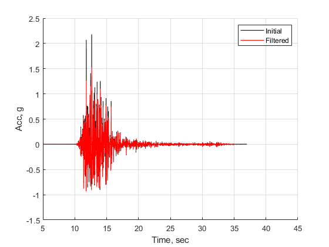
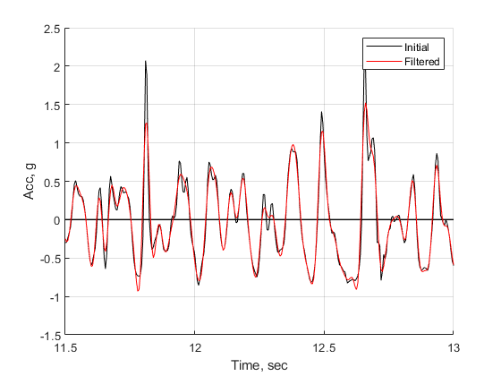
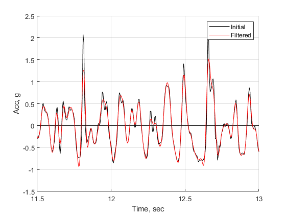

verification Low- and high- pass Butterworth filter of OpenSeismoMatlab
Contents
- Reference
- Description
- Earthquake motion
- Apply high pass Butterworth filter
- Apply low pass Butterworth filter
- Plot the acceleration time histories
- Plot a zoom-in view of the acceleration time histories
- Calculate the Fourier spectra
- Plot the Fourier spectra
- Calculate the acceleration response spectra
- Plot the acceleration response spectra
- Copyright
Reference
Graizer, V. (2012, September). Effect of low-pass filtering and re-sampling on spectral and peak ground acceleration in strong-motion records. In Proceedings of the 15th World Conference of Earthquake Engineering, Lisbon, Portugal (pp. 24-28).
Description
Verify Figure 3.2 of the above reference, for the MW 6.3 Christchurch, New Zealand earthquake at Heathcote Valley Primary School (HVSC) station, Up-component. The time histories, elastic response spectra and Fourier spectra from unfiltered and filtered accelerations are shown and compared. In the above reference, the ground motion was processed following the 1970s Caltech procedure, low-pass filtered and re-sampled to 50 samples/sec by the GeoNet New Zealand strong motion network. However in this example, Butterworth filter is applied and it gives similar results.
Earthquake motion
Load earthquake data
eqmotions={'Christchurch2011HVPS_UP'};
data=load([eqmotions{1},'.dat']);
t=data(:,1);
dt=t(2)-t(1);
xgtt=data(:,2);
xgtt=[zeros(10/dt,1);xgtt];
t=(0:numel(xgtt)-1)'*dt;
xgtt=xgtt/9.81;
Apply high pass Butterworth filter
Switch
sw='butterworthhigh';
Order of Butterworth filter
bOrder=4;
Cut-off frequency
flc=0.1;
Apply OpenSeismoMatlab
S1=OpenSeismoMatlab(dt,xgtt,sw,bOrder,flc);
Filtered acceleration
cxgtt=S1.acc;
Apply low pass Butterworth filter
Switch
sw='butterworthlow';
Order of Butterworth filter
bOrder=4;
Cut-off frequency
fuc=25;
Apply OpenSeismoMatlab to high pass filtered filtered acceleration
S2=OpenSeismoMatlab(dt,cxgtt,sw,bOrder,fuc);
Filtered acceleration
cxgtt=S2.acc;
Plot the acceleration time histories
Initialize figure
figure() hold on plot(t,zeros(size(t)),'k','LineWidth',1) % Plot the acceleration time history of the initial ground motion p1=plot(t,xgtt,'k'); % Plot the acceleration time history of the bandpass filtered ground motion p2=plot(t,cxgtt,'r'); % Finalize figure hold off grid on legend([p1,p2],{'Initial','Filtered'}) xlabel('Time, sec') ylabel('Acc, g') xlim([5,45]) ylim([-1.5,2.5]) drawnow; pause(0.1)
Plot a zoom-in view of the acceleration time histories
Capture the handle of the plot of the acceleration time histories
originalFigure = gcf; % Create a copy of the figure copiedFigure = copyobj(originalFigure, 0); % Show the copied figure figure(copiedFigure); % Apply zoom along x-axis xlim([11.5,13]) drawnow; pause(0.1)
 
 Calculate the Fourier spectra
Switch
sw='fas';
Apply OpenSeismoMatlab to the initial ground motion
S3=OpenSeismoMatlab(dt,xgtt,sw);
Apply OpenSeismoMatlab to the filtered ground motion
S4=OpenSeismoMatlab(dt,cxgtt,sw);
Plot the Fourier spectra
Initialize figure
figure() loglog(1,1,'w') hold on % Plot the Fourier spectrum of the initial ground motion in logarithmic % scale for frequencies larger than 0.05 Hz ind10=S4.freq>=0.05; p1=loglog(S3.freq(ind10),S3.FAS(ind10),'k','LineWidth',1); % Plot the Fourier spectrum of the filtered ground motion in logarithmic % scale for frequencies larger than 0.05 Hz and lower than fuc ind11=(S4.freq<=fuc)& (S4.freq>=0.05); p2=loglog(S4.freq(ind11),S4.FAS(ind11),'r','LineWidth',1); % Finalize figure hold off grid on xlim([1e-2,1e2]) ylim([1e-4,1]) legend([p1,p2],{'Initial','Filtered'}) xlabel('Frequency, Hz') ylabel('Fourier spectra, g*sec') drawnow; pause(0.1)

Calculate the acceleration response spectra
Switch
sw='elrs';
Critical damping ratio
ksi=0.05;
% Period range for which the response spectrum is queried
T=logspace(1,-2,100);
Apply OpenSeismoMatlab to the initial ground motion
S5=OpenSeismoMatlab(dt,xgtt,sw,T,ksi);
Apply OpenSeismoMatlab to the filtered ground motion
S6=OpenSeismoMatlab(dt,cxgtt,sw,T,ksi);
Plot the acceleration response spectra
Initialize figure
figure() semilogx(1,1,'w') hold on % Plot the acceleration response spectrum of the initial ground motion in % logarithmic scale p1=semilogx(1./S5.Period,S5.Sa,'k','LineWidth',1); % Plot the acceleration response spectrum of the filtered ground motion in % logarithmic scale p2=semilogx(1./S6.Period,S6.Sa,'r','LineWidth',1); % Finalize figure hold off grid on legend([p1,p2],{'Initial','Filtered'}) xlabel('Frequency, Hz') ylabel('Spectral acceleration, g') xlim([0.1,100]) ylim([0,6]) drawnow; pause(0.1)

Copyright
Copyright (c) 2018-2023 by George Papazafeiropoulos
- Major, Infrastructure Engineer, Hellenic Air Force
- Civil Engineer, M.Sc., Ph.D.
- Email: gpapazafeiropoulos@yahoo.gr